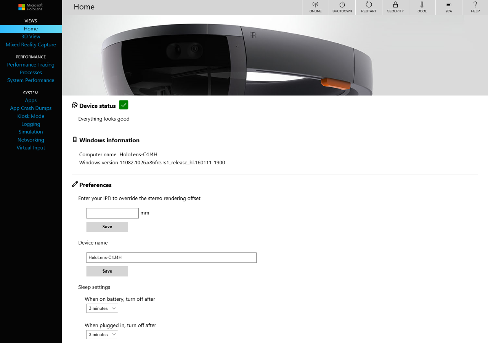
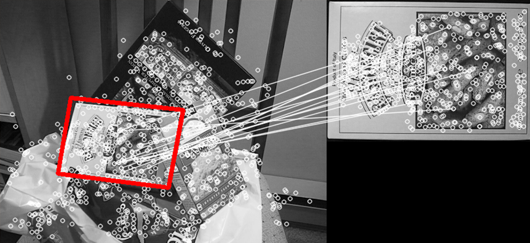

Report
The first step in the project was getting familiar with the HoloLens. This was a significant challenge given the very recent launch of the
HoloLens in 2016, and the recent update of Windows 10 to include Windows Holographic, in 2017 [3].
Given the continuous development of the API and frequent updates to the system, configurations and calibrations of the controls was a
difficult and continuous task. With the accessibility difficulties due to the restriction of one device per team, there was the challenge
of researching a way to emulate the HoloLens on each of the team members’ computers. This was of the utmost importance given the time
restrictions and the constant need for testing given the device’s frequent updates.

HoloLens Emulator [4]
The team opted to use a recently built emulator
of the HoloLens to install and configure on each of the workplaces. Another challenge was the strong dependence the HoloLens had with the Windows
10 operating system. This was a factor that was important to resolve, thus the entire team had to upgrade their working computers to the latest
version of Windows. This included having a lab computer at school set up in order to meet and test, and later demo, the application. As this
was a school computer lab, there were the challenges associated with bureaucracy, as well as limitations associated with a large public network.
One notable example is the fact that having a device in developer mode connect directly to the Concordia network isn’t really possible, as it is
not considered a secure device [4]. Thus, it was necessary to pair the HoloLens to a computer on a private network, such that applications could
be deployed directly to the device through a device portal [7].
The installation and configuration of the HoloLens-Unity development tools allowed streamlining of the collaborative work. This allowed a medium
where the entire team would be able to collaborate on the project simultaneously and remotely. The primary difficulty was the numerous
configurations necessary to have a working interface that emulated the HoloLens functionality. Given the team’s inexperience with the Unity
Development Software, and the various configurations settings necessary, having a working setup that was able to function on the HoloLens was a
daunting task. This required familiarity with the terms and notions packaged with the development process of the device. It should be noted that
while the emulator was invaluable as it made it possible to work without the HoloLens itself, it was also in itself a source of new difficulties.
For example, the deployment process for the HoloLens [5] was not identical to the deployment process of the emulator [6], thus both deployment
processes had to be implemented for the development pipeline to function.

HoloLens Device Portal [7]
Once this initial barrier had been surpassed, the next task was to research how to access the HoloLens’ native depth perception functionality
and surface detection. Although the documentation was clear, given a recent update, the documentation was outdated and merely provided the team
with a direction and with little else to work with. This meant many hours of searching on forums for answers given the subtleties of the system.
Thankfully, the community was very helpful. The first test was to follow a tutorial provided by Microsoft that allowed the user to interact with
a series of holograms and place them on real world surfaces by interacting with the virtual mesh mapped to the surrounding. One noticeable problem
was the technical limitations of the HoloLens at capturing the proper detail in unfavorable settings with dark surfaces in less than ideal lighting.
These hardware limitations made it apparent that the team would have to approach their goals with a different outlook on what would be achievable.
The next step involved researching the ability to track, in real time, a basic 2D image using the HoloLens. This involved identifying feature points,
unique features that each image has, that typically consist of high-contrast edges. It is important that these feature points are not impacted
significantly while looking at them from different angles. After research in storing images to be identified in the world on the HoloLens, the team
managed to scan some images and store their feature points and their information in a database in order to make them accessible for the recognition of
the targets. This then provided the ability to identify the target images in the world.

Feature Points (Photo Credit: Anastasiia Bobeshko)
Using DroidCam [8], an Android smartphone application that emulates a webcam, and the HoloLens Emulator, the team was able to emulate the HoloLens’
camera functionality to capture the live feed of the application set up to detect using feature detection points. It was especially useful for the team
to work on the project without direct access to the HoloLens and was an important factor in speeding up the development and testing processes. Several
regression tests were formulated with the lab functioning on the most recent stable version as a fallback to debug odd behaviours that were not always
easy to reproduce. After much testing using Droidcam to emulate the HoloLens the team came to hypothesize that there was a limited distance at which
objects are well and consistently recognized. After several tests on all 4 smartphone devices and the HoloLens itself, this became confirmed the
hypothesis. This is likely a direct result of lighting within the room and issues with the resolution of the HoloLens’ camera.
The final stages consisted of transferring the knowledge gained in detecting a 2D image and applying it in order to detect 3D objects in the world.
This would allow for more interesting interactions with the HoloLens and the real world. This meant the team would need to find a way to scan a 3D
object and store its feature points. After several hours of trial and error, the team was able to capture the necessary still images of the targets
in order to identify the appropriate feature points and store the related data into a database for later use in the recognition of those targets.
Using the many distinct features identified with those pictures, an adequate mapping of those points could be produced, which gave a means to detect
the object in real time.


{kind=link}